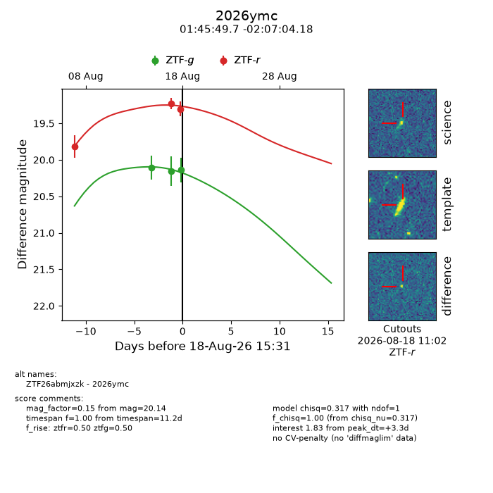
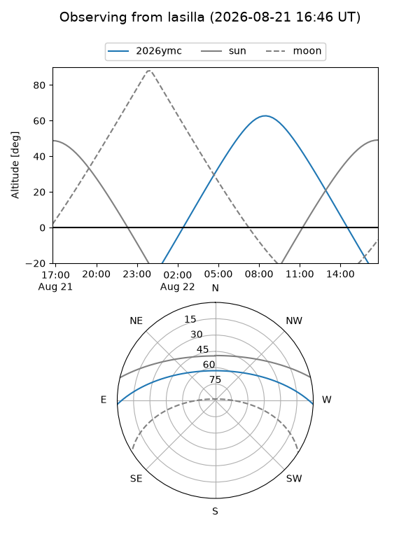
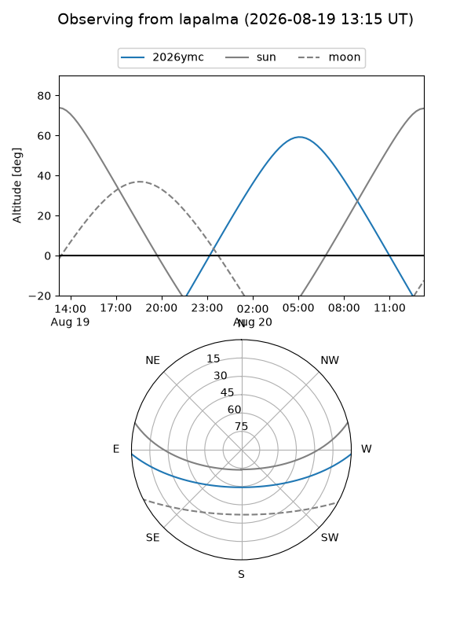
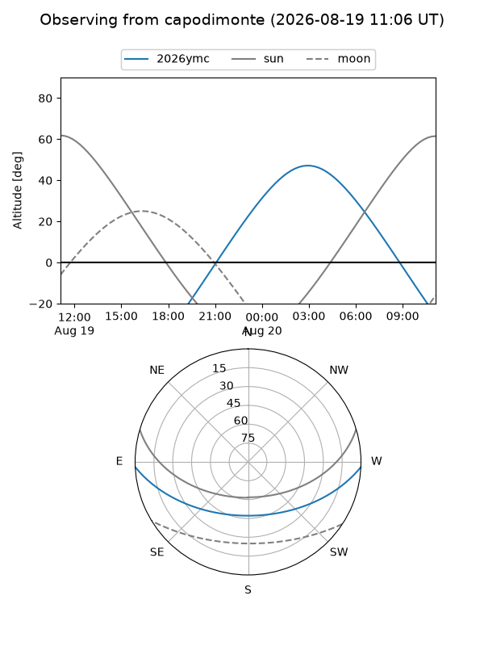
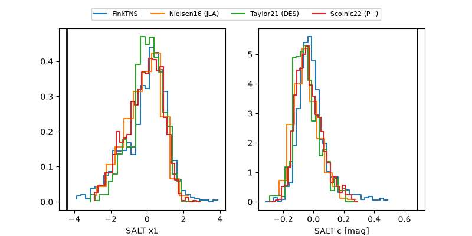

2026ymc
Target 2026ymc at 2026-08-18 15:34
Aliases and brokers:
FINK-ZTF: ztf.fink-portal.org/ZTF26abmjxzk
Lasair-ZTF: lasair-ztf.lsst.ac.uk/objects/ZTF26abmjxzk
ALeRCE-ZTF: alerce.online/object/ZTF26abmjxzk
YSE-PZ: ziggy.ucolick.org/yse/transient_detail/2026ymc
TNS name: wis-tns.org/object/2026ymc
Direct TNS query: direct search
alt names
ZTF26abmjxzk (ztf,fink_ztf)
2026ymc (tns,yse)
Coordinates:
equatorial (ra, dec) = 26.4571,-2.11783
equatorial (HMS+DMS) = 01:45:49.72,-02:07:04.18
galactic (l, b) = (152.7452,-61.79983)
Flags:
TNS type: nan
peak dt: +3.3
Photometry:
last ztfg=20.14, ztfr=19.30
3 ztfg, 3 ztfr detections
Lightcurve

Visibility



Additional plots
